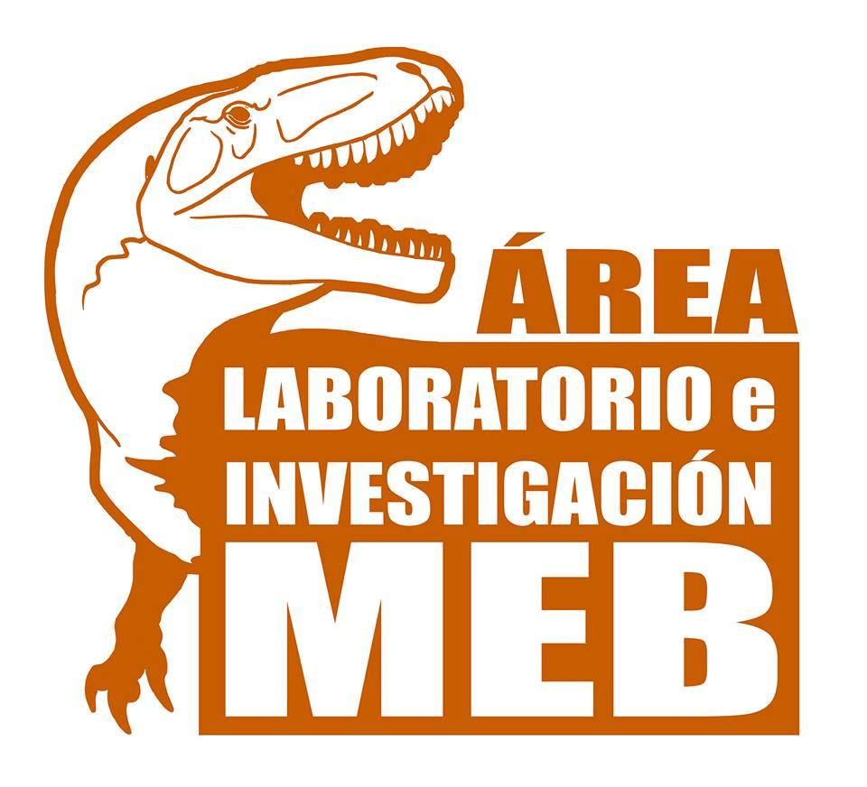

Área Laboratorio e Investigación-Museo Paleontológico "Ernesto Bachmann"
-Cuando se encuentra el fósil, se hace la extracción de campo y eso se saca con un colchón de yeso. No es que sacamos los huesos limpios, sino que con toda la porción de roca y todo eso cubierto con yeso porque es la forma más rápida de hacerlo. Luego eso se lleva al laboratorio y se saca la tapa de yeso y eso se va preparando con pinceles y puntitas. Es un trabajo artesanal realizado por los técnicos paleontológicos y es lo que más tiempo lleva porque se separa toda la roca alrededor del hueso. Ahí es donde nosotros los paleontólogos hacemos el estudio, se describe el material y se compara con especies relacionadas y, a partir de eso, se analiza si es una especie conocida o nueva. Se le da un nombre y todos los estudios de parentescos que se puedan determinar de esos huesos. Eso se manda a publicar a una revista científica. Es importante publicarlo porque sino no existe en ciencia. La única forma de darle entidad a ese hallazgo es publicarlo en una revista científica, donde envían el informe con las fotos a otros paleontólogos en el mundo para que lo revisen. Una vez que sale la publicación ese es el nombre que se le da si es una especie nueva. Cuando ustedes ven que se presenta una nueva especie de dinosaurio, en realidad eso se encontró varios años antes. Hay todo un trabajo previo que lleva tiempo y generalmente en el rango de los años de trabajo. Desde que se encuentra, se extrae, se limpia, se estudia y se publica todo ese proceso puede llevar de 4 a 10 años.
